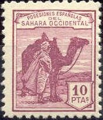

Return To Catalogue - Spain overview - Rio de Oro - Cape Juby
Note: on my website many of the
pictures can not be seen! They are of course present in the
catalogue;
contact me if you want to purchase the catalogue. /p>

5 c green 10 c grey 15 c blue 20 c lilac 25 c red 30 c red-brown 40 c blue 50 c orange 60 c lilac 1 P red 4 P brown 10 P lilac
These stamps exist with blue or red overprint 'Republica Espanola' horizontally or vertically (reading up or downwards) and were issued in 1931/1932.
5 c brown 10 c green 15 c violet 20 c lilac 25 c red 30 c olive 40 c blue 50 c red-brown 60 c green (this value was not issued for Spain) 1 P orange 4 P yellow-brown 10 P violet
5 c red (view with pillars, 'SAHARA' vertically in blue) 10 c green (King in ellipse, 'SAHARA' vertically in red) 15 c blue (medieval ship, 'SAHARA' horizontally in red) 20 c lilac (standing man, 'SAHARA' horizontally in red) 25 c red (design as 15 c, 'SAHARA' horizontally in blue) 30 c brown (design as 5 c, 'SAHARA' vertically in blue) 40 c blue (design as 10 c, 'SAHARA' vertically in red) 50 c orange (design as 20 c, 'SAHARA' horizontally in blue) 1 P black (design as 5 c, 'SAHARA' vertically in red) 4 P red (design as 10 c, 'SAHARA' vertically in blue) 10 P brown (design as 10 c, 'SAHARA' vertically in blue)
{kind=link}
{kind=link}